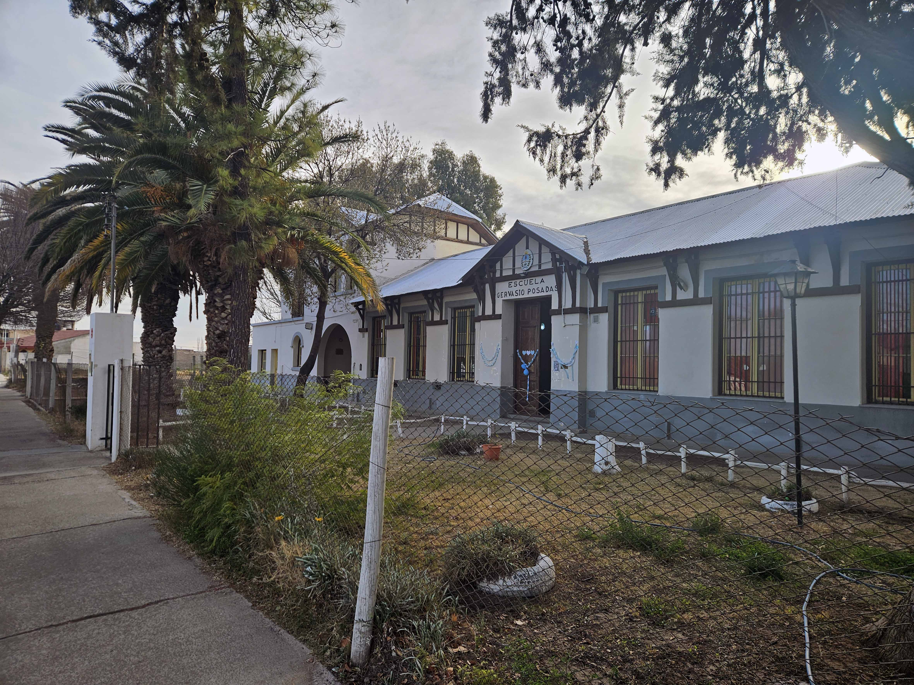
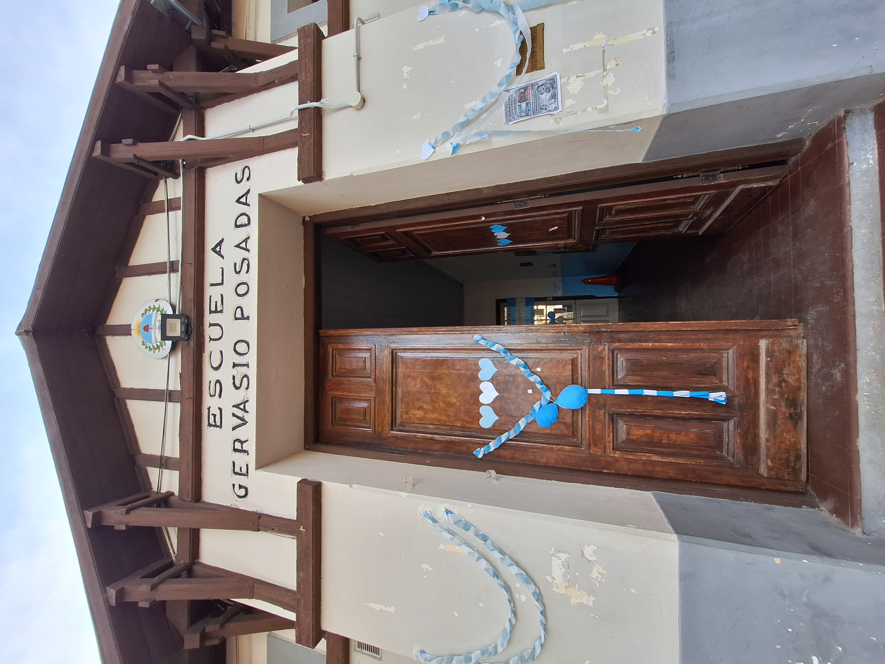
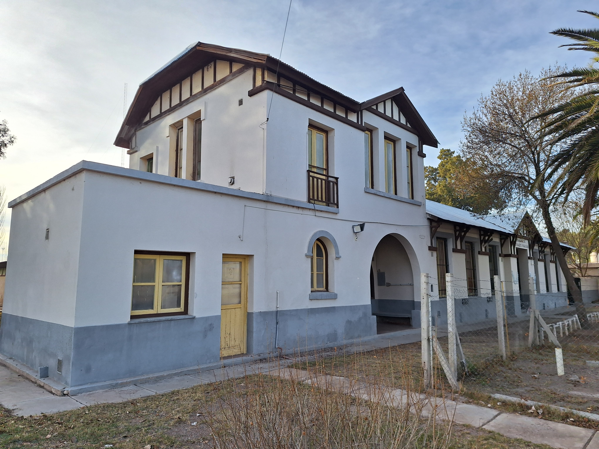

Se ubica en la calle Remedios de Escalada s/n, a 100 metros al noroeste de la plaza distrital. El edificio actual, de estilo neocolonial, data del año 1928. Constituye el segundo establecimiento educativo más antiguo del departamento, que aún continúa en funcionamiento. El proyecto pertenece al Ing. civil Miguel Eliseo Bialet Laprida y se efectuó en el marco de un proceso de renovación educativa que experimentó la provincia de Mendoza entre las décadas de 1920 y 1930 y que centró su atención en la construcción de escuelas en todo el territorio provincial, con especial atención al ámbito rural. El objetivo general consistió en reforzar la educación primaria, reducir el analfabetismo y evitar la deserción escolar.

La construcción fue llevada a cabo por una empresa de capitales alemanes, F.H. Schmidt, que destacaba por el uso de cemento y bloques de cemento que importaba de Alemania, lo que les aseguraba una larga durabilidad. El diseño respondió a un nuevo esquema más asociados a una figura doméstica, diferente al de las tradicionales “escuelas-palacio” con pórticos y columnatas de impronta clásica. Este establecimiento educativo se inauguró el 17 de mayo de 1930.

Dentro del establecimiento escolar se encuentra el sable que perteneció a Gervasio Posadas, una reliquia histórica en buen estado de conservación y con una comunidad educativa que reconoce su valor histórico.
